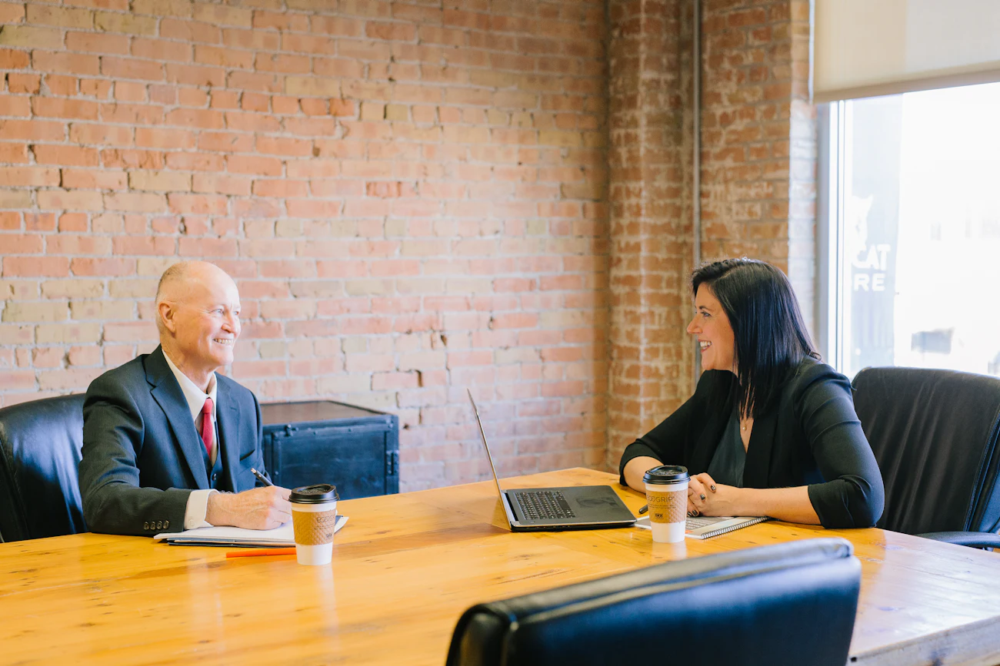

01
Prisão em Flagrante
Atuação jurídica diante da prisão e acompanhamento dos procedimentos iniciais relacionados ao caso.
Dr. Lucas Guedes
Atuação jurídica individualizada, com análise cuidadosa do caso, comunicação clara e acompanhamento em todas as etapas necessárias.
Atendimento nas áreas Criminal e Trabalhista, para pessoas físicas e empresas, em Caçapava e demais cidades do Vale do Paraíba. E em todo o território do Brasil por atendimento remoto.
Dr. Lucas Guedes — OAB/SP 554.377
Atendimento individualizado
Questões criminais e trabalhistas podem envolver decisões importantes, prazos, documentos e diferentes caminhos processuais.
Por isso, o atendimento começa pela compreensão detalhada do caso, seguida da análise jurídica e da definição das medidas adequadas para aquela situação específica.
O objetivo é proporcionar ao cliente informação, orientação e acompanhamento jurídico durante cada etapa do processo, sempre com transparência e respeito ao sigilo profissional.
Áreas de atuação · Direito Criminal
Assistência jurídica em diferentes momentos da persecução penal, desde situações anteriores ao processo até medidas cabíveis após o encerramento da ação.
A atuação poderá compreender, conforme as particularidades do caso:
Atuação jurídica diante da prisão e acompanhamento dos procedimentos iniciais relacionados ao caso.
Assistência jurídica durante a apresentação da pessoa presa ao Poder Judiciário.
Defesa e acompanhamento do processo criminal, incluindo audiências, manifestações processuais e demais atos necessários.
Análise e utilização das medidas recursais juridicamente cabíveis de acordo com cada processo.
Acompanhamento de questões relacionadas ao cumprimento da pena e aos direitos da pessoa condenada.
Mesmo depois do trânsito em julgado de uma condenação, determinadas situações previstas em lei podem permitir a apresentação de uma Revisão Criminal.
Assistência à vítima e Assistência de Acusação
A advocacia criminal não atua somente na defesa de quem está sendo investigado ou acusado.
A vítima de um crime também pode contar com acompanhamento jurídico próprio.
O advogado pode orientar e acompanhar a vítima durante diferentes fases do caso, analisar documentos e provas, acompanhar o andamento da investigação e adotar as medidas juridicamente cabíveis para resguardar seus interesses.
Quando presentes os requisitos legais e já instaurada a ação penal pública, também poderá ocorrer a atuação como Assistente de Acusação, auxiliando a atuação do Ministério Público dentro dos limites estabelecidos pela legislação.
Essa possibilidade ainda é desconhecida por muitas vítimas, que frequentemente acreditam que somente a pessoa investigada ou acusada pode possuir advogado próprio no processo criminal.
O acompanhamento jurídico permite que a vítima compreenda melhor o andamento do caso, suas possibilidades de participação e os atos processuais que estão sendo realizados.
Áreas de atuação · Direito Trabalhista
O atendimento trabalhista contempla tanto quem busca orientação relacionada aos seus direitos enquanto trabalhador quanto empresas que precisam de assessoria ou defesa em reclamações trabalhistas.
Orientação e acompanhamento jurídico em questões relacionadas à relação de trabalho, incluindo análise da situação, documentos e eventuais direitos envolvidos.
A atuação poderá compreender o processo desde seu ajuizamento até a conclusão definitiva, conforme as necessidades de cada caso.

Análise de situações em que houve trabalho sem registro em carteira, para verificar a possibilidade de reconhecimento do vínculo e dos direitos dele decorrentes.
Orientação nos casos em que o empregador descumpre obrigações do contrato de trabalho, hipótese em que a lei permite ao trabalhador pleitear o encerramento do vínculo.
Conferência dos valores devidos no encerramento do contrato, como saldo de salário, aviso prévio, férias, 13º salário e FGTS com a respectiva multa.
Análise da jornada praticada, intervalos, banco de horas e trabalho em domingos e feriados, em comparação com o que prevê a legislação.
Análise das condições do ambiente de trabalho e do pagamento dos adicionais previstos em lei para atividades insalubres ou perigosas.
Orientação sobre estabilidade provisória, responsabilidade do empregador e demais direitos relacionados a acidentes e doenças decorrentes do trabalho.
Representação e acompanhamento de empresas em reclamações trabalhistas, com análise dos fatos, documentos apresentados e elaboração da estratégia jurídica adequada para a defesa processual.
O acompanhamento poderá ocorrer durante todas as etapas do processo trabalhista, inclusive audiências, manifestações, recursos e demais procedimentos aplicáveis.
Análise da reclamação, dos documentos da empresa e elaboração da contestação e das provas cabíveis.
Representação da empresa nas audiências de conciliação e instrução, incluindo a avaliação de propostas de acordo.
Análise das medidas recursais cabíveis e acompanhamento da fase de execução, incluindo conferência de cálculos.
Passo a passo
Entre em contato pelo WhatsApp e informe brevemente qual é a situação para a qual necessita de atendimento jurídico.
Durante o atendimento, serão apresentados os fatos, documentos disponíveis e demais informações relevantes para a compreensão do caso.
As particularidades da situação são analisadas para identificação dos possíveis caminhos jurídicos e das medidas aplicáveis.
Havendo contratação dos serviços jurídicos, é realizado o acompanhamento das etapas relacionadas ao caso, com comunicação ao cliente durante seu desenvolvimento.
Sobre o Dr. Lucas Guedes
Advogado — OAB/SP 554.377
Atuação profissional nas áreas de Direito Criminal e Direito do Trabalho, prestando atendimento para pessoas físicas e empresas.
Seu trabalho é pautado pela análise individual de cada demanda, comunicação clara com o cliente e acompanhamento responsável das questões jurídicas confiadas ao escritório.
Atendimento presencial em Caçapava/SP e possibilidade de atendimento remoto para clientes de outras localidades.
Onde atendemos
O escritório está localizado em Caçapava/SP, com atendimento a clientes de diferentes cidades do Vale do Paraíba.
Também são realizados atendimentos online, permitindo a análise e o acompanhamento de casos de outras localidades do Brasil quando a natureza da demanda e as condições jurídicas permitirem a atuação remota.
Escritório localizado em Caçapava/SP.
Atendimento a clientes de diferentes cidades do Vale do Paraíba.
Atendimento remoto em todo o território do Brasil.
Dúvidas frequentes
O atendimento realizado pelo escritório é exclusivamente particular.
O escritório não realiza atendimento pela Defensoria Pública nem presta assistência jurídica gratuita por meio de convênios dessa natureza.
Pessoas que não possuem condições financeiras para contratar um advogado particular podem verificar os critérios para atendimento junto à Defensoria Pública ou ao órgão responsável pela assistência jurídica gratuita em sua região.
Sim.
As informações compartilhadas durante o atendimento jurídico são protegidas pelo dever de sigilo profissional, conforme as normas que regem o exercício da advocacia.
Isso permite que o cliente apresente os fatos relacionados ao seu caso em um ambiente profissional e reservado, condição essencial para que o advogado possa compreender adequadamente a situação e prestar a orientação jurídica pertinente.
Não.
O escritório está localizado em Caçapava/SP e realiza atendimentos para clientes de diferentes cidades do Vale do Paraíba.
Também é possível realizar atendimento remoto para pessoas de outras regiões do Brasil, dependendo das características do caso e da possibilidade de atuação à distância.
Sim.
Embora seja comum associar a advocacia criminal exclusivamente à defesa de investigados ou acusados, a vítima também pode possuir advogado próprio.
Dependendo da fase e das características do caso, o advogado poderá acompanhar procedimentos, orientar a vítima e atuar na proteção de seus interesses.
Em determinadas ações penais públicas, preenchidos os requisitos legais, também poderá ocorrer a atuação como Assistente de Acusação.
Sim.
Nem toda atuação jurídica começa após o ajuizamento de uma ação.
Na área criminal, por exemplo, o acompanhamento pode ocorrer ainda durante uma investigação ou inquérito policial.
Na área trabalhista, também é possível buscar orientação para compreender determinada situação antes da adoção de uma medida judicial.
A análise do caso permite identificar quais providências podem ser juridicamente consideradas.
Contato
Entre em contato para apresentar brevemente o seu caso e obter informações sobre o atendimento.
Direito Criminal | Direito Trabalhista
Caçapava/SP • Vale do Paraíba • Atendimento Online
O conteúdo desta página possui caráter informativo. A análise jurídica e as medidas eventualmente aplicáveis dependem das circunstâncias específicas de cada caso.